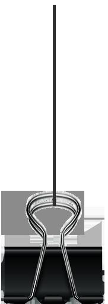
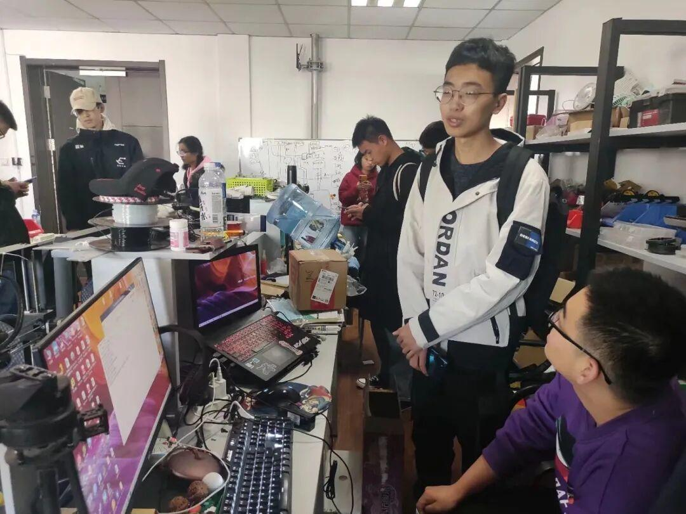
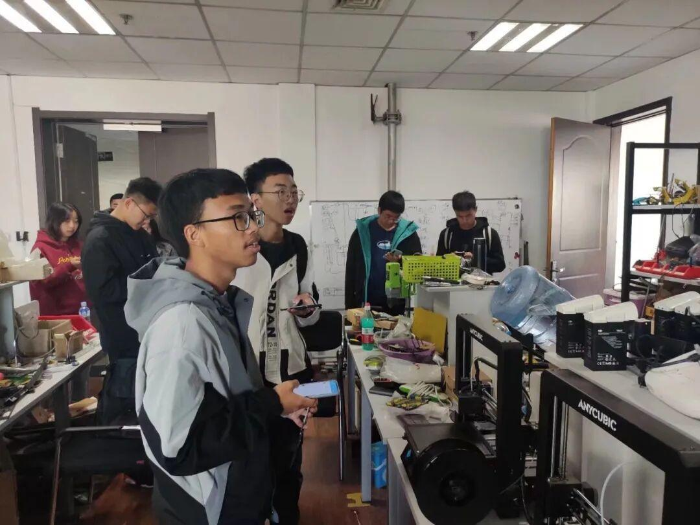
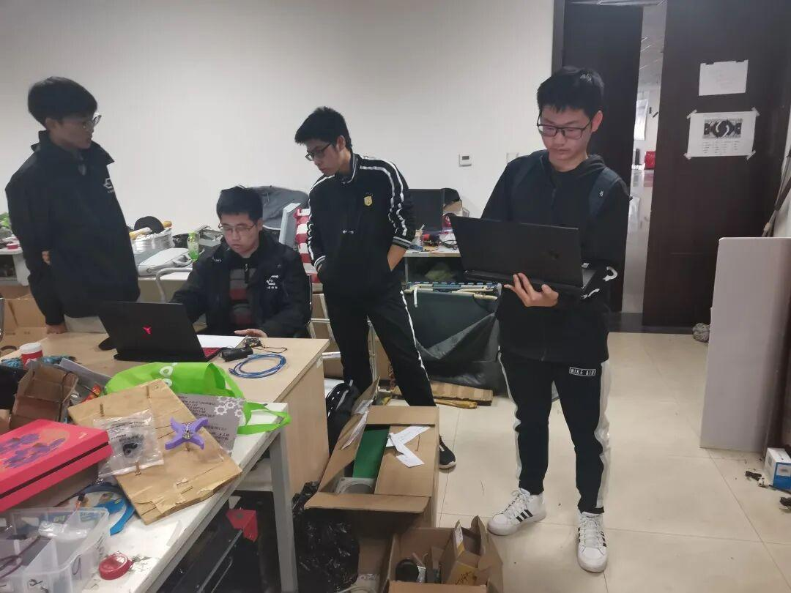
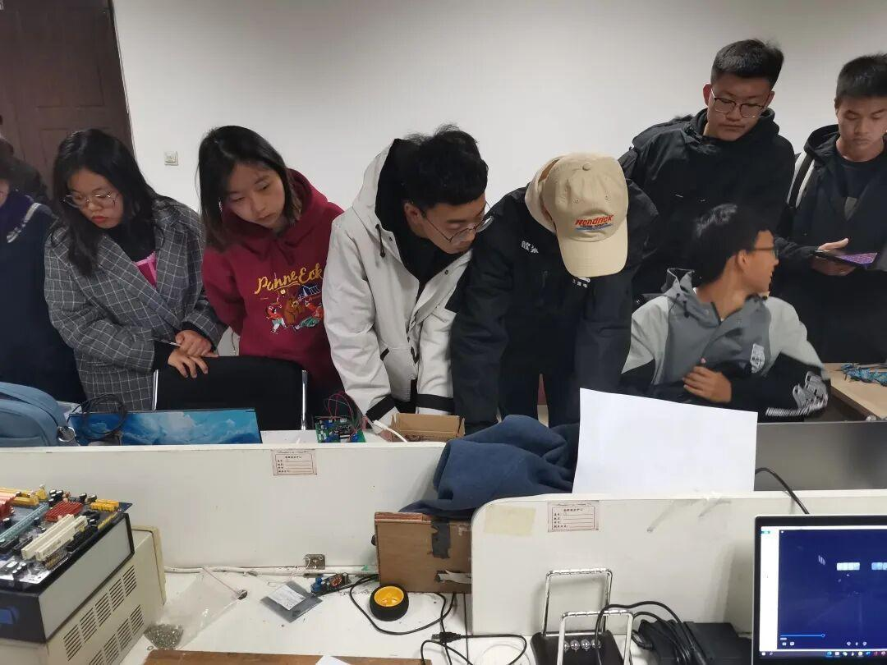
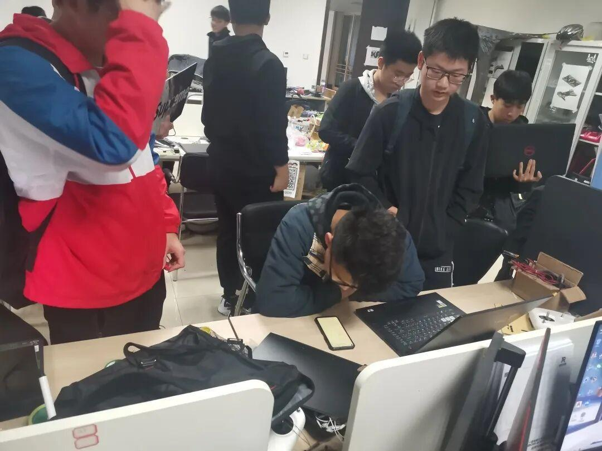
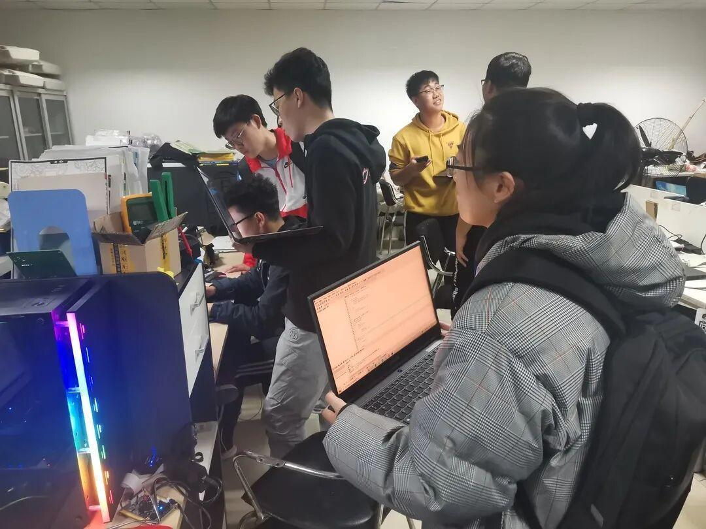
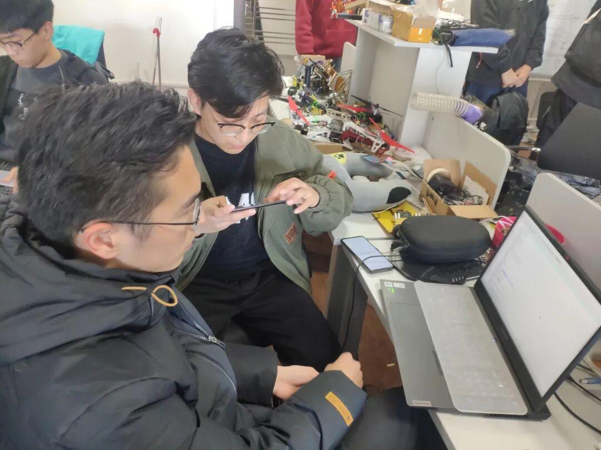
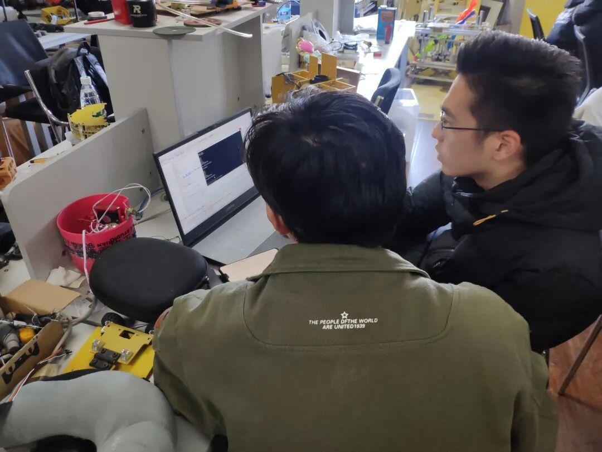
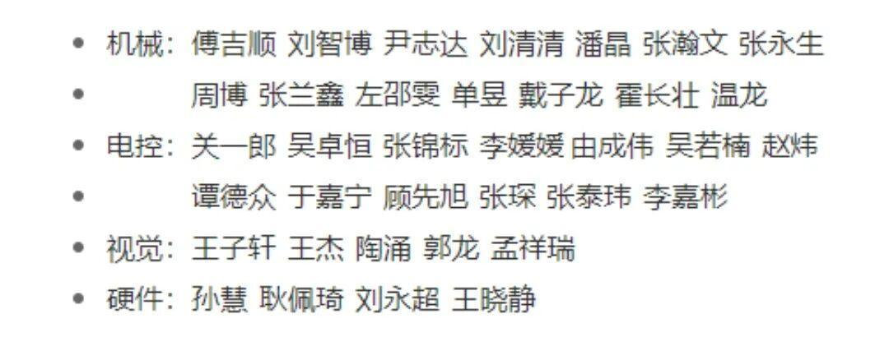

Ambition战队初次考核圆满结束
Ambition战队
2021预备队员初次考核
电协Ambition战队2021预备队员初次考核于2020年11月7日下午在文体中心210完美收官！让我们来一起看看他们的考核内容。


大一、大二
使用Solidworks2017或更高版本绘制Ambition战队机械组顾问提供 (PDF形式，名为RM机械预备队招新绘图)的三维模型(注意绘图步骤)
机械原理的内容进行口头提问(平面连杆机构与齿轮机构将进行深入考察)
对机械设计常识的考核(口头提问)




大一
完成指定课设题目制作,并安装能完整使用的32单片机运行环境(KEIL5, MDK)
题目文件名称: ambition大一考核(c语言课设)
其中有若干课设,请任选其一作答
要求代码格式公正逻辑清晰
现场设有答辩环节,请自带电脑准备答辩
大二
口述题目(必选)
口述pid、 陀螺仪、CAN通信原理
实践题(二选一)
使用MPU6050进行姿态解算, 要求3分钟之内动差不超过6°
使用两张STM32系列单片机(推荐为STM32F407)互相使用CAN通信协议发送数据并显示
数据要求
1、一个float型,两个int型
2、数据一直在变化，怎么变化自由发挥
3、发5s后停止等待5s后再次发送5s成周期循环能够判断出另一张板何时发何时停




大一、大二
理论题
一阶和二阶电路时域分析
现场考试，闭卷(30分钟)一阶二阶各一道题
仿真题
要求使用软件
Multisim
Tina-ti
题目
设计一个电荷泵电路
要求
Vin3.3V
Vout5V
实物题
用H桥电路做一个小车底盘驱动电路(四轮差速)
电机为普通智能车减速电机(额定电压9V)
要求为每个轮能独立控制其转速与方向
考核内容重点为mos管的使用




大一
完成指定课设题目制作,并安装能完整使用的32单片机运行环境(KEIL5, MDK)
注：同电控组大一考核标准
大二
第一题:安装编程环境
要求Vs&++&&opencv, 并能够运行任意例程
第二题: c++基础
编写一个学生类,类里面包含学生信息，即学号,姓名，成绩(无序)四个属性。
用这个类创建10个以 上的对象。并把这些对象放进vector容器中,然后按照成绩非降序排序复制到另一个容器中
对象数据要求现场输入




大一、大二
由于运营组性质特殊，不对外招新，遂不赘述。
以下是本次考核通过名单

Ambition战队初次考核结束啦
恭喜大家正式成为预备队员
希望在未来的日子里
为了共同的梦想与爱好
大家能一起努力、不断向前！
排版|辛学敏
图片|信息部
文字|战 队
关注我们，了解更多资讯哦~